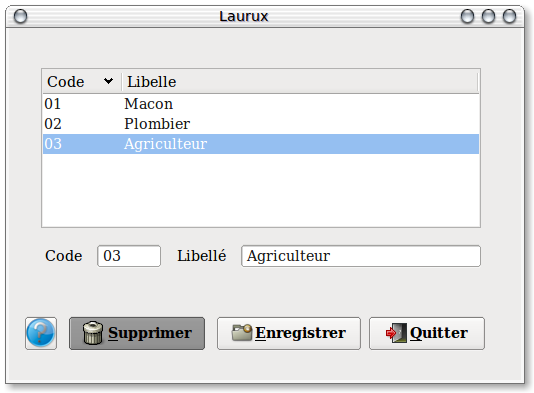

~ Comptabilité et Facturation Laurux ~

~ Comptabilité et Facturation Laurux ~ |
|
|
|

Pour créer vos types clients il suffit d'attribuer un code et un libéllé.
----------------------------------------------------------------------------------------------------------------------